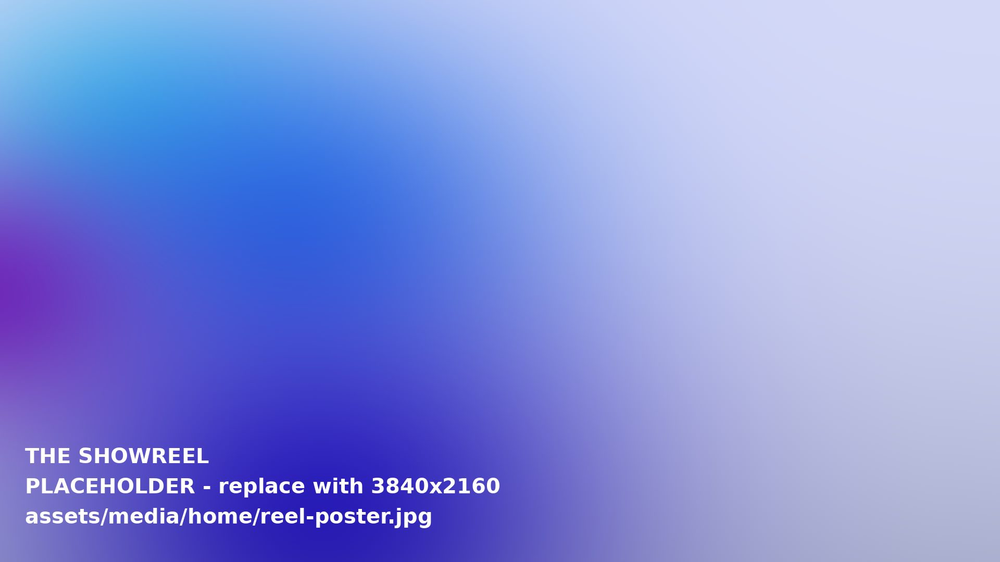
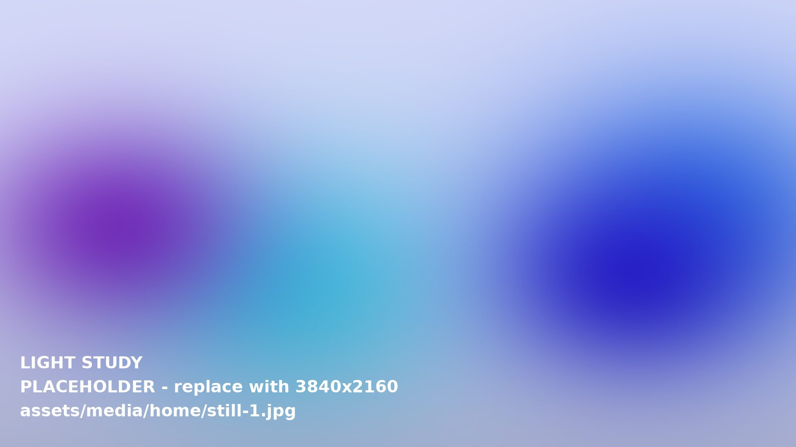
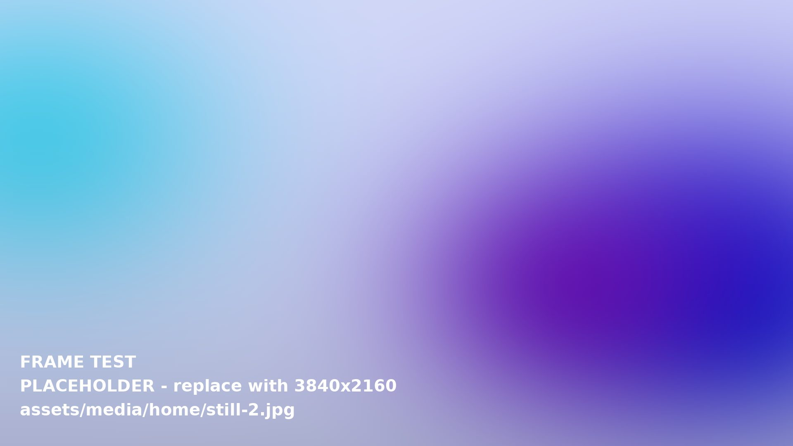
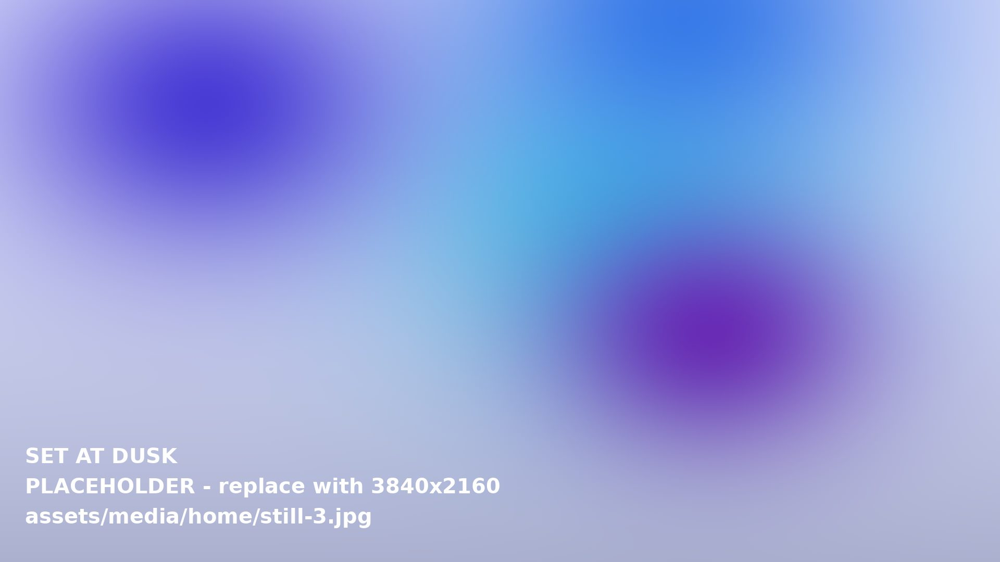

Read the scene
This atlas is built like a film: chapters, a few interactive tools and plain language. Start anywhere.
Every chapter ends with a pointer to the next, so you can read it as one long take or jump between scenes.
A visual guide to how films are directed, shot, staged and built, one frame at a time.
↓Every great film is thousands of invisible decisions: where the camera stands, how the light falls, who risks the fall, and what the director chose not to show.
Scroll sideways. Open any chapter.
More chapters
are in the edit.




This atlas is built like a film: chapters, a few interactive tools and plain language. Start anywhere.
Every chapter ends with a pointer to the next, so you can read it as one long take or jump between scenes.
One recorded attempt at a shot.
Extra angles for editing choices.
Planned movement within a scene.
The end of filming.
Learn to seethe decisionsbehind the frame.A Frame Atlas principle